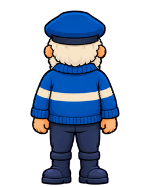
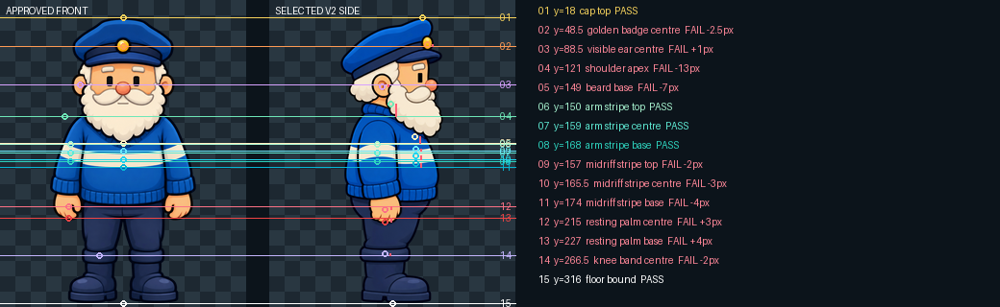
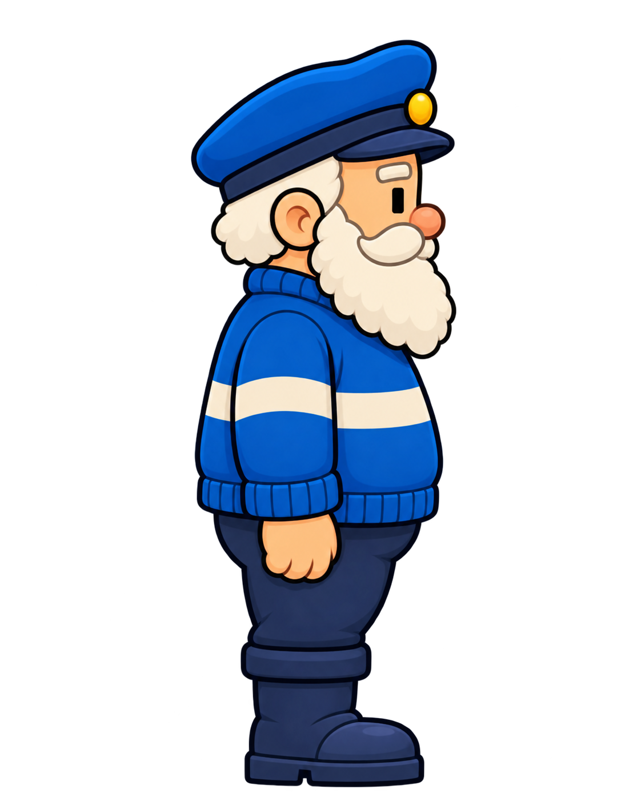

Approved front

V2 is immutable. V3 adds the exact vertical skeleton requested for turn authoring; no production or animation art has changed.
What passes: front, selected side and back are each exactly 298 source pixels high from cap top y=18 to floor y=316. What does not: equal total height alone is insufficient. Badge, ear, shoulder, beard base, midriff stripe, palm and knee datums expose internal vertical drift in the selected side.



A horizontal line is drawn from each approved-front datum. The circle marks the side feature's measured position; red vertical ticks show the miss. Zero means exact.
| Landmark | front y | side y | side Δ | result |
|---|---|---|---|---|
| cap top | 18 | 18 | +0 | PASS |
| golden badge centre | 48.5 | 46 | -2.5 | REDRAFT |
| visible ear centre | 88.5 | 89.5 | +1 | REDRAFT |
| shoulder apex | 121 | 108 | -13 | REDRAFT |
| beard base | 149 | 142 | -7 | REDRAFT |
| arm stripe top | 150 | 150 | +0 | PASS |
| arm stripe centre | 159 | 159 | +0 | PASS |
| arm stripe base | 168 | 168 | +0 | PASS |
| midriff stripe top | 157 | 155 | -2 | REDRAFT |
| midriff stripe centre | 165.5 | 162.5 | -3 | REDRAFT |
| midriff stripe base | 174 | 170 | -4 | REDRAFT |
| resting palm centre | 215 | 218 | +3 | REDRAFT |
| resting palm base | 227 | 231 | +4 | REDRAFT |
| knee band centre | 266.5 | 264.5 | -2 | REDRAFT |
| floor bound | 316 | 316 | +0 | PASS |
The beard base, shoulders, arm stripe and midriff stripe are separately registered; matching one cannot conceal drift in another.
Both attempts retained the selected design reasonably well but still missed multiple hard datums. They are evidence only and are not candidates.

The selected side remains the preferred visual design, but it is not transition-ready. The next side draft must preserve that design while bringing every hard vertical datum to delta 0 before any turn frames are authored.